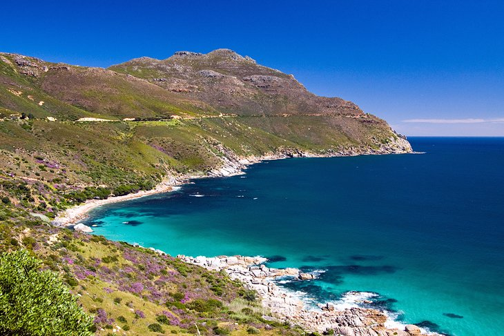
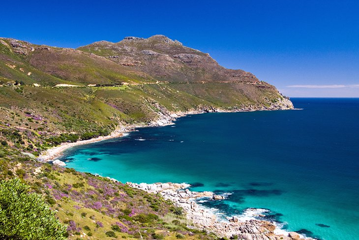
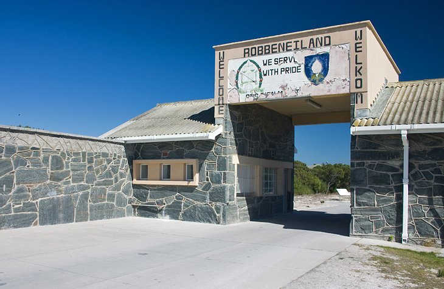
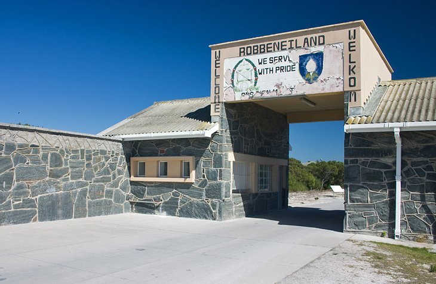

Cape Town was named the best place in the world to visit by both the New York Times and and The Daily Telegraph, area 2.461km squared. Cape Town has also been a host for both the 1995 Rugby World Cup and 2010 FIFA World Cup and annually host the Africa leg of the World Rugby 7s.

 

 
